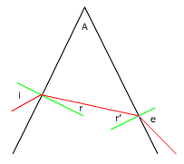
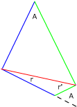

Marcha de la luz en un prisma
Se aplica Snell a la entrada del rayo en el prisma y a la salida:

n1·sen i = n2·sen r
n2·sen r' = n1·sen e
Para relacionar r con r' se considera el triágulo cuyos lados son el rayo y las normales a las caras del prisma

Las líneas del mismo color son perpendi-culares y delimitan ángulos iguales
En el triángulo pequeño:
r + r' + (180 - A) = 180
r + r' = A